NärCons Heliga Arrangörsbibel
Hej fantastiska arrangör!
Nu är vi äntligen här, det är dags för NärCon 2014. Detta som du håller i din hand (eller läser på din skärm, wow, framtiden) är årets arrangörsbibel, din kajplats i viken. Den har Personalservice tagit fram och är din guide till hur du och din personal kan göra årets NärCon så bra som möjligt. Men det allra viktigaste tipset jag kan ge dig är att vi arrangerar allihopa NärCon tillsammans; jag tror att så länge vi är peppade, glada, lösningsinriktade och inte bara fokuserar på vårt egna område utan hjälps åt så kommer allting att lösa sig. Ibland är det tufft och intensivt och då är det skönt att få uppbackning från övriga arrangörer. Så ta hand om varandra och kör hårt, det är dags för oss att leverera ett galet bra evenemang!
/Samuel, er huvudansvarige
Service mot besökare
NärCon är till för våra besökare. Utan dem skulle inte konventet finnas. Allt vårt arbete utgår ifrån att göra deras upplevelse så fantastisk och underbar som möjligt. Det gäller allt från grillens arbete med att göra goda hamburgare till städteamets fixande med att göra konventet så rent som möjligt. Varenda team, varenda panda, varenda en av oss bidrar till att förhöja våra besökares tid på konventet, oavsett hur långt bak i kulliserna en arbetar. Det här betyder att vi alltid måste komma ihåg hur vi bemöter våra besökare. Även om saker och ting kan vara stressigt ser vi alltid till att vara så trevliga som möjligt. Frågar en besökare dig något som du inte kan svara på går det alltid bra att hänvisa till informationsdisken.
Personalmat
Som ersättning för det arbete pandorna gör under NärCon bjuder vi på mat i form av matbiljetter. Alla pandor får en matbiljett för varje arbetspass à 4 timmar. Dessa matbiljetter är värda 30:- och kan utbytas mot en måltid eller josdrink i någon av NärCons matstånd, så se till att dina pandor är medvetna om detta. Glöm inte bort att ordna så att de kan använda sina matbiljetter efter sitt pass, ifall du försvinner från konventsområdet eller på annat sätt inte är tillgänglig. Kom ihåg att en panda med mat i magen är en glad panda!
Att vara arrangör
Att vara områdesansvarig betyder att du är ansvarig för dina personal och att det är du som leder ditt område, det gör du bäst genom att vara ett exempel för dina pandor. Visa respekt, ha tålamod och lyssna på dina pandor så ska du se att de mer än gärna gör det samma tillbaka.
Känns det som NärCon kan bli för stort? För mycket att hålla reda på? Det behöver inte bli en ohållbar situation! Den enskilt viktigaste saken vi alla kan göra är att visa hänsyn och att kommunicera. Om du eller någon annan begår ett misstag, kom ihåg: vi är alla nybörjare på detta och vi ska alla hjälpas åt att ro det i land! Ingen fråga är dum, och ingen person är mer viktig än någon annan.
Hur fungerar NärCon på plats?
På plats finns det specifika team som arbetar inom konvents infrastruktur för att se till att ditt område fungerar som det ska. Är du osäker på var du ska vända dig kontaktar du samband som håller hus i A-huset i stundetköket på plan 3.
Behöver du inhandla något inför eller under konvent till ditt område? Helst handlar du in detta själv. Kom ihåg att spara kvitto för att få ersättning av NärCon efter konventet! Har du inte möjlighet att handla in något eller om det är för stort eller dyrt går du till förrådet. Du hittar förrådet i A-huset i rum A2. Där kan du även hämta ut material som NärCon äger för utlåning till ditt område.
Om någon inom ditt team, du själv eller en besökare mår dåligt vänder du dig till konventsvärdarna. De finns till förfogan dygnet runt och håller till i P18 i C-huset. Gäller det något mer akut kan du alltid tillkalla dem via komradio. Vid livshotande situationer ringer du 112.
Vad händer om du ser någon obehörig person på konventsområdet? Förklara på ett vänligt sätt att NärCon är ett event där endast betalande gäster får vistas, att alla besökare behöver en biljett för att få komma in på konventsområdet men att hen är välkommen att köpa en entrébiljett. Om du känner att situationen är hotfull kan du alltid tillkalla konventsvärdarna via komradio. Kom ihåg att Corson är en allmän yta! Här får obehöriga vistas.
Du hittar även ekonomikontoret i A-huset i rum A1. Har du frågor kring ersättning, behöver hämta ut matbiljetter eller har frågor kring som rör ekonomin är det dit du går. Utanför bör du även kunna hitta begäran om ersättningsblanketter. Kom dock ihåg att du inte får gå in i ekonomikontoret utan uppsikt.
Tider att passa
Uppriggningen av NärCon sker löpande under hela veckan innan konventet öppnar, alltså från måndag till torsdag förmiddag. Det går bra att komma tidigare under veckan, personalsovsalarna är tillgängliga redan på måndagen. På onsdag klockan 18:00 är det allmänna pandamötet där alla pandor kommer få information om allt de behöver veta inför NärCon, därför är det bra ifall så många av dina pandor är på plats redan på onsdag.
Torsdag klockan 09:00 kommer pandafotot att tas. Dra med så många av dina personal på det här, för iår slår vi på stort. Vare sig du eller dina pandor kommer vilja missa det här. Vad som kommer ske är hemligt, men mer information om detta kommer ske på plats. Så här blev personalfotot förra året med 300 deltagande personal (Foto Gabriel Kulig):
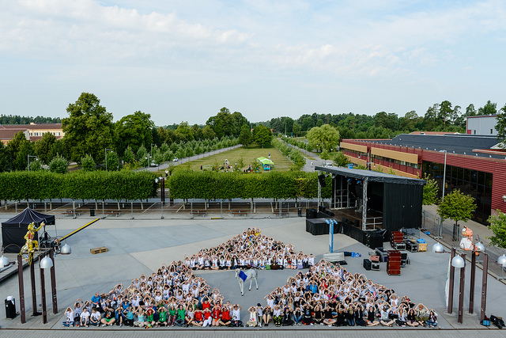
NärCon öppnar torsdag klockan 13:37 och stänger 16:00 på söndagen. Försök att se till att så många av dina personal är kvar under nedriggningen av konventet på söndagen. Om du behöver lämna konventet tidigt på söndagen behöver du se till att någon är ansvarig för att ditt område riggas ner. Försök att få så mycket av ditt område nedriggat så fort som möjligt. Ju snabbare alla riggar ner sitt område desto bättre. Kom ihåg att pandorna gärna gillar att försvinna för att krama gamla och nya vänner, be dem dock att göra detta innan konventet stängs ner eller någon annan gång, då det ofta saktar ner nedriggningen.
Personalservice
För personalens välmående finns personalservice (PeSe). De finns där för att hjälpa till dig med att ta hand om dina pandor. PeSe har hand om pandaloungen, vilket är stället dina personal kan ta det lugnt, dricka kaffe och få information. Det är även där du hämtar ut ditt teams personalutrustning samt checkar in dina personal. Pandaloungen hittar du i C-huset sal P44.
Raptor Protection Room
Behöver du ta en paus från konventet, vila ut med en dricka i handen och en macka i magen? Då är det RPR du går till. RPR är en oas för dig som arrangör, där du kan ta det lugnt i en liten stund. Iår har även gruppchefer tillgång till RPR, om du har någon sådan i ditt team meddelar du hen detta. RPR håller till i C-huset sal P43.
Kommunikation - hur får jag tag på någon?
Vi är alldeles för många för att vi ska kunna lista alla här. Se till däremot att alla era pandor listar ett rätt nummer på panda.narcon.se. När vi väl på plats försöker få tag på någon så är det först där vi tittar. Underlätta för alla: registrera att telefonnummer i panda-systemet! (PS: Glöm inte bort att registrera ett ICE, In Case of Emergency-nummer till en anhörig! DS)
- • Pontus Rundqvist (Kommittee: Scen, foto/film samt personalservice): 0732017479
- • Sofia Mustaniemi (Kommittee: Scen, foto/film samt personalservice): 0727132062
- • Samuel Anlér (Huvudarrangör: Kontakt med Kommun, Linköpings Universitet): 0737390249
- • David Fallgren (Huvudarrangör: Övergripande ansvarig för ekonomi och Sponsorer/Butiker): 0767635232
- • Erik Eklundh (Kommittee: Servering och Mat): 0736969062
- • Linnéa Olofsson (Kommittee: Servering och Mat): 0700929002
- • Peter Nelsson (Kommittee: Esport, BFB, Artist Alley, Städ samt Camping): 0763403095
- • Emil Jönsson (Kommittee: Esport, BFB, Artist Alley, Städ samt Camping): 0733850627
- • Thomas Svalan (Kommittee: Aktiviteter, Information samt Entré): 0762098086
- • Daniel Ullenius (Kommittee: Aktiviteter, Information samt Entré): 0739958686
- • Komradion är inte alltid bästa vägen att få fram information. Prova ringa på mobilen först!
- • Tänk ut vad du ska säga innan du ropar
- • Vänta på ett "Klart Slut" innan du startar en ny dialog
- • Va på rätt kanal! NärCon 2014 kommer ha många fler kanaler än vanligt, kolla upp vilken du ska ligga på!
Lokalansvariga
Varje lokal har en anvarig person som du kan komma i kontakt med om det gäller något. Dessa personer är:
- • A-huset: Amina Lebbad, amina.lebbad@gmail.com, 0735715774
- • C-huset: Isabell Alison Öhrlund, lilla-bella@hotmail.com, 0735560090
- • D-huset & I-huset: Jill Korpelin, jill.korpelin@hotmail.com, 0762356296
- • Corson: Sofie Löfgren, sofie95@live.com, 0727144632 & Jeanette Mård, Jeanettemard@hotmail.com, 0730316684
- • KEY-huset, Campushallen & TERRA: Benjamin Ågren, tyke150@hotmail.com, 0734427979
Under upp- och nedriggning är det dessa personer som har allmänet ansvar för deras respektive lokal.
Lokalkartor
Översikt:
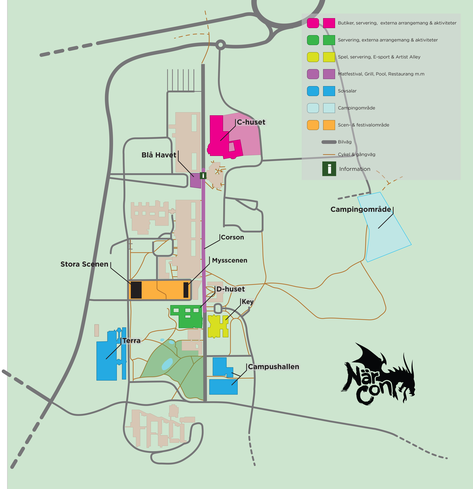
C-huset:
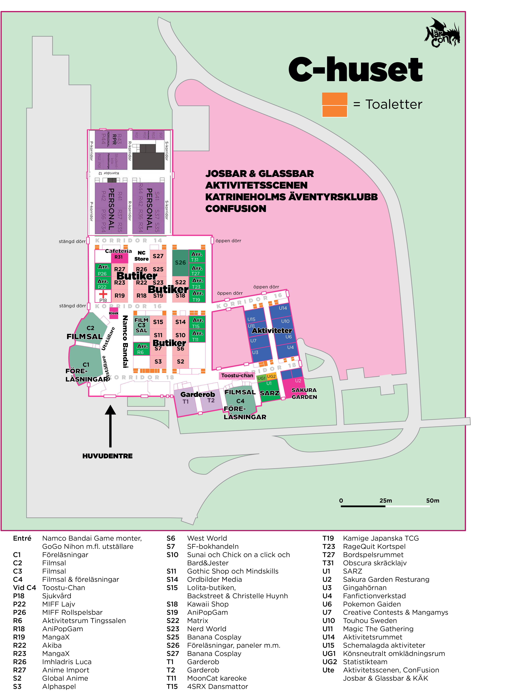
A-huset, Markplan (Plan 2):
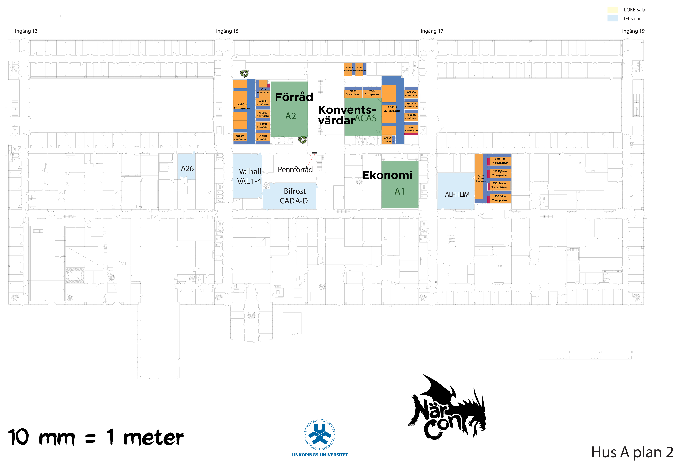
A-huset, andra våning (Plan 3):
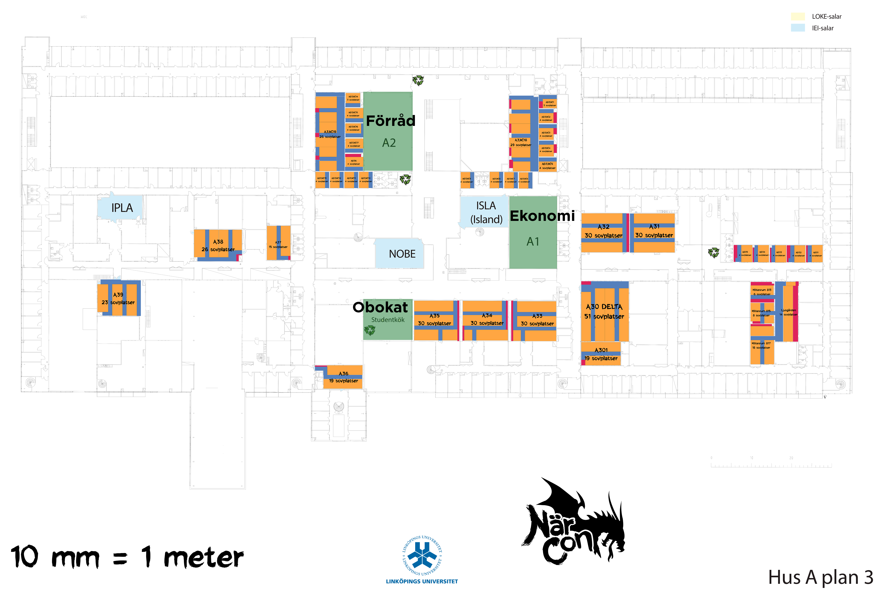
D-huset, Markplan (plan 2):
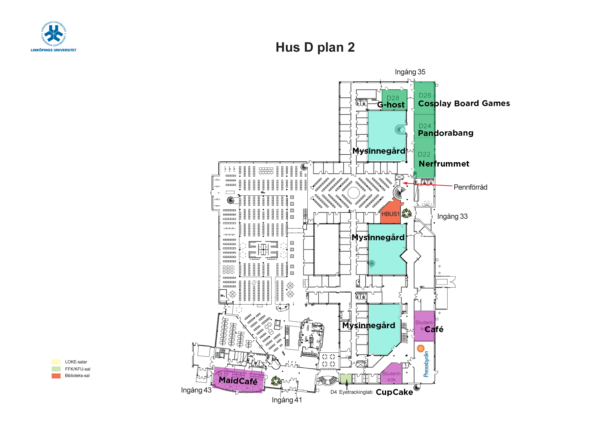
D-huset, andra våning (plan 3):
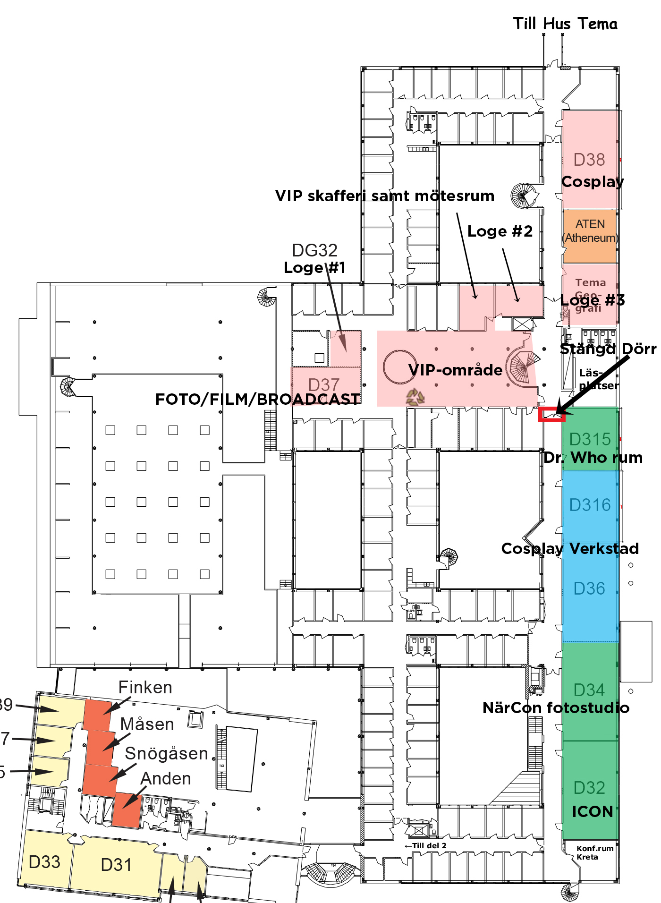
D-huset, tredje våning (plan 4):

Key-huset, Markplan (plan 2):
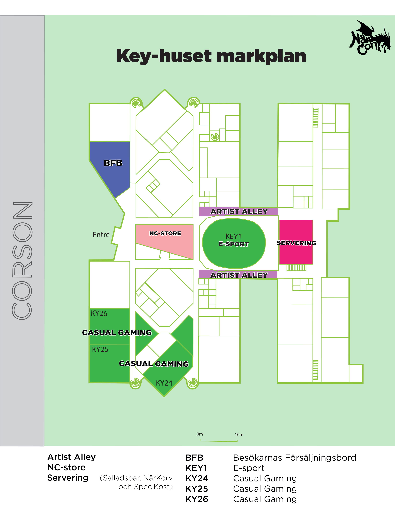
Key-huset, andra våning (plan 3):
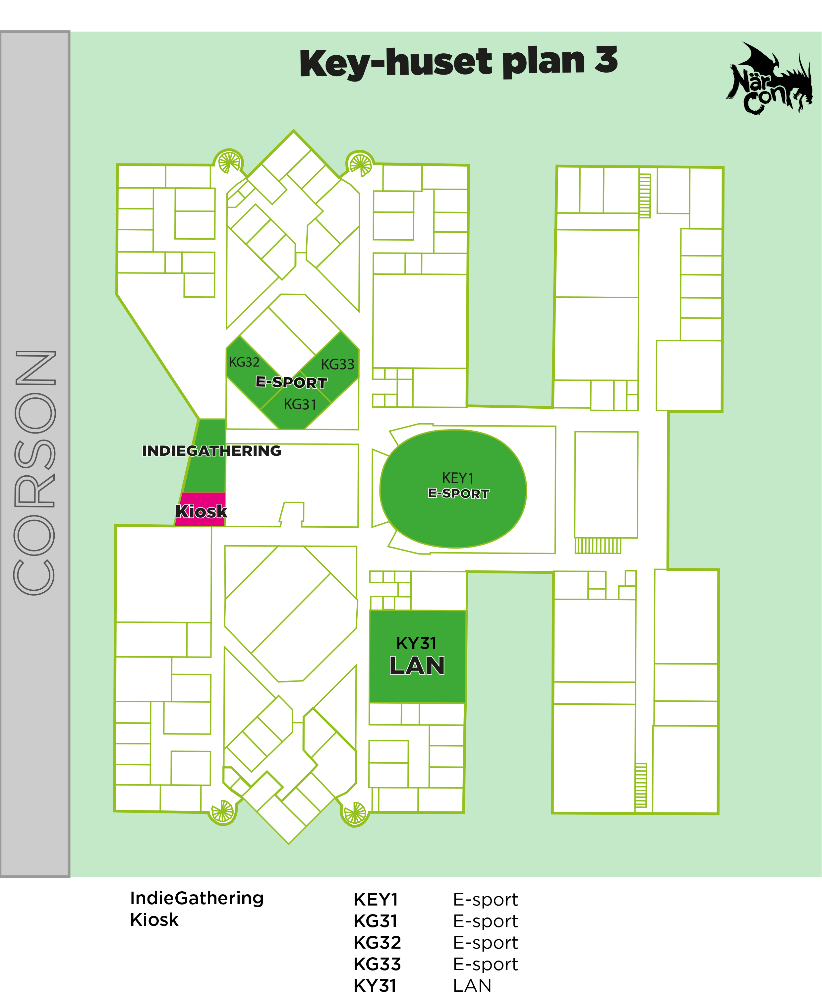
Key-huset, tredje våning (plan 4):
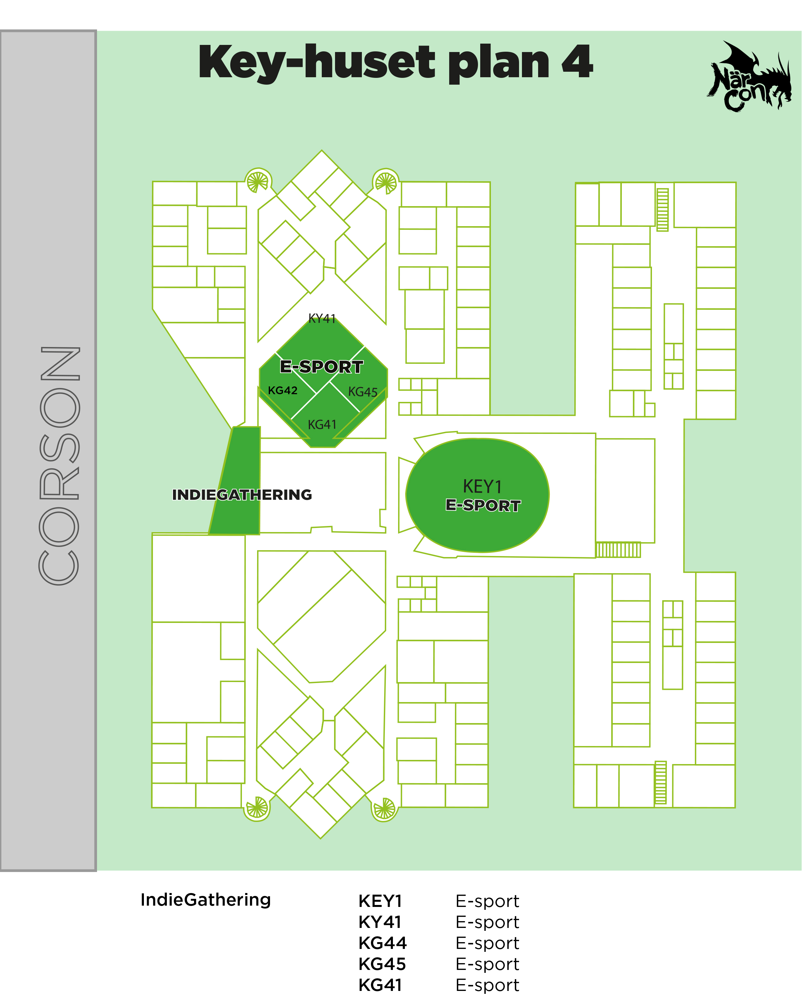
Campus Terra, gymnastiksal:
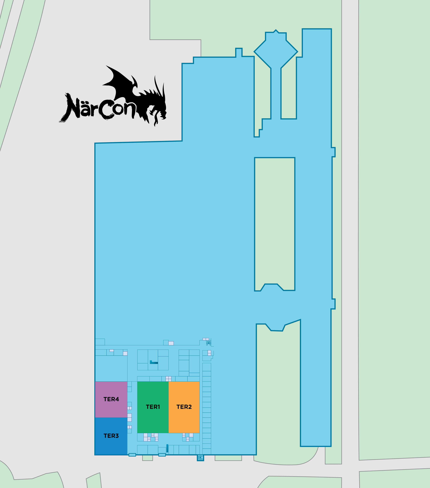
{kind=link}
{kind=link}
{kind=link}
{kind=link}
{kind=link}
{kind=link}
{kind=link}
{kind=link}
{kind=link}
{kind=link}